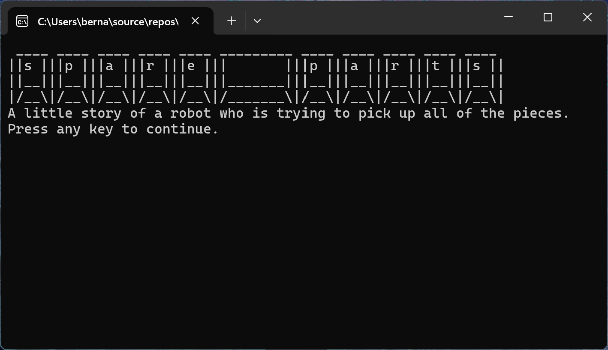

Spare Parts
A little story of a robot who is trying to pick up all of the pieces.
Spare Parts is a text-based exploration game and my first project using C#. Players control a damaged robot trapped inside a research facility, searching the complex for missing body parts while attempting to convince two scientists to allow them to escape.
Project Overview
Created during my Foundation Year, this project was an early exploration of programming and interactive game logic. I designed the game around exploration, conditional outcomes and simple puzzle mechanics, allowing me to focus on learning C# while still creating a complete playable experience.
Project Gallery
A selection of screenshots showing the terminal style interface.

Design Approach
I wanted to create a game that focused on exploration and problem solving rather than combat. At the time, combat systems were outside my experience, so I deliberately scoped the project around mechanics I could implement confidently while learning C#.
The damaged robot provided a simple objective structure: explore the facility, recover the missing body parts and ultimately find a way out.
Riddles & Game Logic
The main progression system was built around two scientists, each presenting the player with a riddle. The player needed to answer both correctly in order to earn their freedom.
This gave me a practical way to experiment with conditional logic. Player responses could change the game's state and determine whether the robot was able to progress towards its escape
The exploration system worked alongside this requirement, giving the player another route towards progression by searching the facility for missing components.
Learning C#
This was my first project using C#, giving me an opportunity to move beyond purely narrative tools and begin implementing game logic through code.
The project introduced me to concepts such as conditional statements, player input, variables and managing different game states. Designing the game around these systems helped me understand how programming could directly support a game's design.
Reflection
Although deliberately small in scope, this project was an important step in developing my programming skills. It showed me that I could use code to create meaningful player choices and consequences rather than treating programming as separate from game design.
The experience gave me a foundation for later projects in Unity and C#, including Shrimpyscroller, where I went on to build a more complex gameplay loop and level structure.